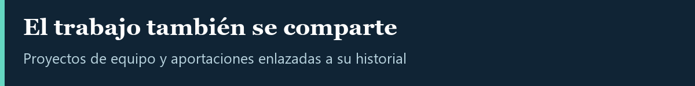

Proyectos académicos de equipo. Distingo el objetivo del proyecto de mis aportaciones registradas en Git.
2026 · Flask, NLTK y scikit-learn
Aplicación para analizar reseñas con procesamiento de lenguaje natural.
Mi aportación: limpieza de texto, corrección ortográfica, lematización, traducción y ajuste del clasificador con balanceo de clases.
Ver contribución en Git
2026 · Flutter, Dart y Flask
Aplicación móvil universitaria con frontend Flutter y backend Flask.
Mi aportación: muro de expresión, perfil, notificaciones y corrección de la integración del proveedor de usuario.
Ver contribución en Git
2026 · React y JavaScript
Plataforma de práctica con preguntas y retroalimentación.
Mi aportación: validación de respuestas, alertas visuales, retroalimentación y organización de preguntas con opciones aleatorias.
Ver contribución en Git
2025 · Python, HTML y MySQL
Sistema web de evaluación docente y de servicios escolares.
Mi aportación: rutas y filtros de evaluación, interfaces, relaciones y lógica SQL, reportes administrativos y documentación.
Ver contribución en Git
2025 · FastAPI, SQLAlchemy y MySQL
Prototipo de catálogo y carrito.
Mi aportación: incorporación del backend con modelos, esquemas, operaciones de catálogo, autenticación y carrito; estructura SQL e interfaz de demostración.
Ver contribución en Git
Consultar evidencias y alcance de todas las colaboraciones
Trabajo en repositorios privados
listassist: proyecto propio de asistencia para un grupo scout, con foco en el pase de lista.
Ejercicio-WSDL: colaboración académica con implementación privada.
Estos enlaces requieren autorización del propietario. El código y los datos permanecen privados.